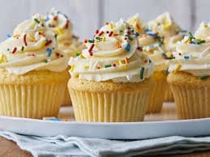

Vanilla Cupcakes
Ingredients (Per Person)
| Ingredient | Quantity |
|---|---|
| Flour | 60g |
| Sugar | 30g |
| Butter | 30g |
| Egg | 0.5 |
| Milk | 25ml |
| Vanilla Extract | 1 tsp |
Watch How to Make Vanilla Cupcakes
Instructions
- Preheat the oven to 180°C (350°F).
- Cream butter and sugar together.
- Beat in the egg and vanilla extract.
- Mix in the flour and milk alternately until smooth.
- Pour batter into cupcake liners.
- Bake for 15-20 minutes until a toothpick comes out clean.